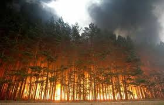
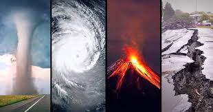
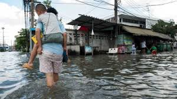
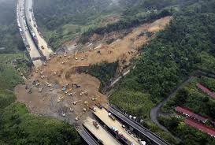

×
Home
About Us
Natural Disasters Information
Login
☰
Caribbean Natural Disasters Awareness
Welcome to Our Website!
Here you can keep up-to-date on Disasters Preparations.




Here is a video about the Importance of preparing for a Natural Disaster.